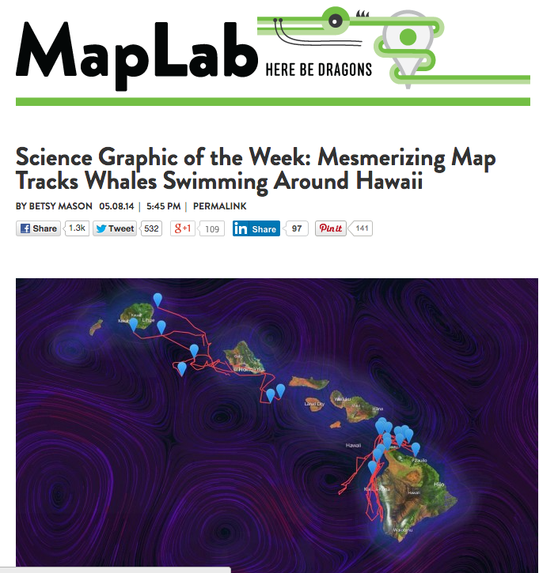

MapNight @ BendTech
Technology development team at GeoEngineers Inc, a national leader in earth science consulting.
Geospatial | Products | Solutions | Visualizations

Our Products
AvianAudit

SaaS based Avian Incident Management and Complience Solution for Utilities
Earth Analytics
Unearth your data.
Built by software developers and finely tuned by earth scientists and engineers.
Our Solutions
Washington Water Cruiser

Mobile boating app for Washington State Boaters.
Available in Google Play and Apple App Store.
State of Idaho Salmon Prioritization
Planning tool developed for to prioritize fish habitat restoration.
Powered by Esri's ArcGIS.com Online Platform.
Visualizations
Whale Application
Buy Bend
Visualize Bend Taxlot Sales
Deschutes County Open Data
"the maps are designed not so much for the specialist as for the people..."
John Wesley Powell